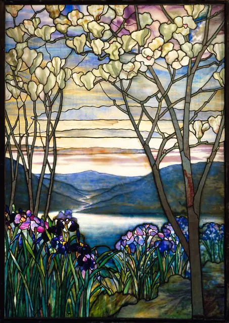
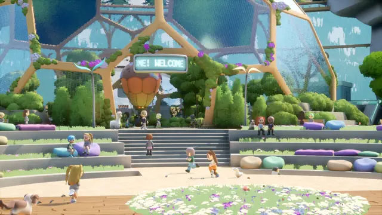
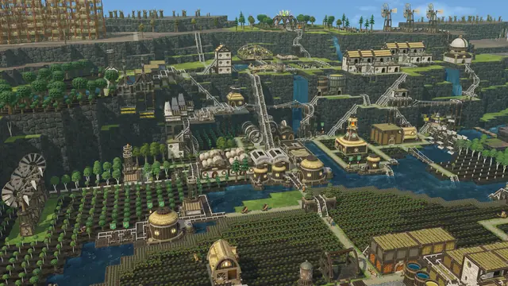
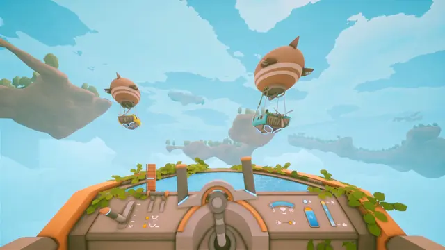
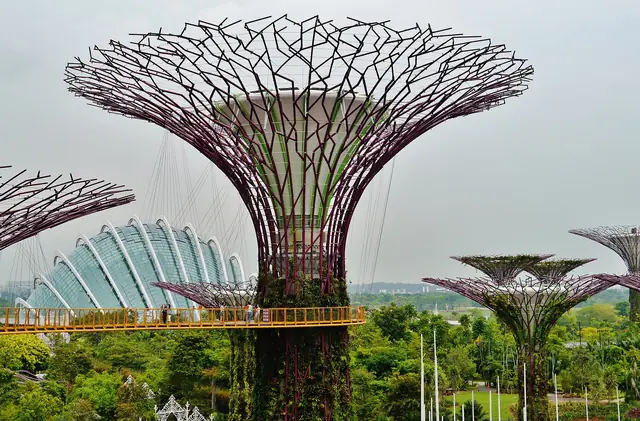
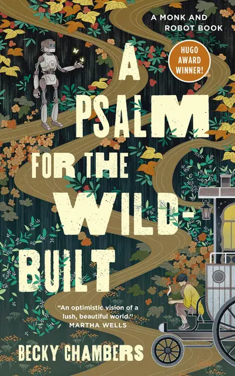

The feel
Solarpunk pictures what Adam Flynn calls "a future that we can want and we might actually be able to get".1 His 2014 manifesto sets it apart from cyberpunk's nihilism and steampunk's "potentially quasi-reactionary tendencies", and makes it about ingenuity, independence and community.2 Its stories are full of light, and the light stands for warmth, clarity, safety and togetherness: the glow of a hearth, folded into a high-tech world.3
Its look leans on Art Nouveau. In a widely shared 2014 Tumblr post, Olivia Louise said most visions of future tech look like an iPod, smooth, geometrical and white, which she found "a little boring and sterile", so she chose Art Nouveau instead.1 Flavio Pintarelli in Domus places the style between Art Nouveau and today's biophilic design, with glass and metal greenhouses and winter gardens as a counterpoint to the opaque glass and concrete fortresses of cyberpunk cities.4
- hopeful
- sunlit
- communal
- repairable
- green and gold
- handmade
Where it comes from
A 2008 post on the blog Republic of the Bees proposed solarpunk as a new literary genre, in honour of the maiden voyage of the Beluga Skysail, a cargo ship that used sail power to save fuel.5 The first collection of self-described solarpunk fiction came out in Brazil in 2012.1,3 In 2014 a Tumblr post by Olivia Louise gave the idea "an Art Nouveau veneer",3 and that September Adam Flynn's notes for Project Hieroglyph pointed readers to its "art nouveau Edwardian-garden aesthetic", which reminded him of Miyazaki.2 ACMI credits Buckminster Fuller's geodesic domes and Paolo Soleri's arcologies with shaping its visual language, and names Hayao Miyazaki as another key influence, whose green cities in Nausicaä of the Valley of the Wind (1984) and Castle in the Sky (1986) came over 20 years earlier.6 In 2019 the concept art studio Atomhawk made solarpunk the theme of its annual art competition.7
Core elements
Art Nouveau lines
Solarpunk borrows Art Nouveau's organic shapes, flowing lines and motifs of vines, leaves and flowers, and combines them with future architecture that works green energy into the landscape.6 Art Nouveau's own mark is a long, asymmetrical line shaped like flower stalks, vine tendrils and insect wings, and its buildings fuse structure with ornament.8
Stained-glass solar panels
Olivia Louise's list of wishes included stained-glass window solar panels, and Elvia Wilk sees that semi-transparent panel as solarpunk's path between technology sealed in a white box and technology laid bare.1 The fiction keeps dressing its panels: coloured like jewels, made to resemble old nipah roofs, or laid as solar mosaic walls that mimic the flowers and trees around them.3
Visible infrastructure
Wilk calls solarpunk's visual side "distinctly architectural and infrastructural",1 and Pintarelli counts architecture and infrastructure among the key elements of its look.4 Flynn describes its opposition as one that "begins with infrastructure", and pictures the American southwest given over to solar collection and pump storage.2
Abundant light
Solarpunk futures are suffused with light: the 292-page anthology Glass and Gardens uses "glow", "bright", "shine", "light" and their derivatives 185 times.3 In these stories light, and making it, marks what is good, above all shared life between people and with nature.3
Small communities and handcraft
Louise asked for handcrafted wares, tailors and dressmakers, more small businesses and car-free walkways lined with independent shops.1 The stories tend to centre small communities, with shared ownership and care for people and the ecosystem valued above growth.3
Influences from many eras and cultures
Flynn's mash-up runs from 1800s age-of-sail and frontier living, with more bicycles, through creative reuse of existing infrastructure and jugaad-style innovation, to high-tech backends with simple, elegant outputs.2 Jay Springett points past Art Nouveau to Sami Angawi's updates of traditional Middle Eastern climate control, permaculture traditions around the world and Singapore's high-rises with living facades.1
How to do it
Choose the power sources
Atomhawk built its 2019 solarpunk brief around how the future is fuelled: an ecological society where everything runs on green energy.7 The post that named the genre wanted older technologies revived for sun and wind, such as cargo ships under sail, and held up Norman Spinrad's Songs from the Stars, whose society limits itself to muscle, sun, wind and water.5
Give structures two uses
Flynn imagines terraced irrigation systems that also act as fluidic computers.2 Jessica Woulfe's prize-winning farm flies wind turbines above the fields, so the land below can still be used for crops and livestock.9 Singapore's Supertrees are vertical gardens that give shade by day, and seven of them also harvest solar energy.10
Draw the Art Nouveau line
Draw with a long, undulating, asymmetrical line taken from flower stalks, buds, tendrils and insect wings.8 In buildings, let columns and beams become thick vines and windows open for light and air, as Art Nouveau interiors did with iron, glass, ceramic and brick.8 Frame figures the way Mucha did in The Times of the Day: delicate colour, exuberant floral motifs and an ornamental border like a Gothic window.11
Paint stained glass in layers
Paint panels and windows the way Tiffany's studio built glass: mottled two-colour opalescent glass for modelling and shadow, rippled glass for texture, and extra layers plated on the back for deeper colour.12 In a shader, draw the panes as Voronoi cells with the lead along their borders: thresholding F2 minus F1 gives lines of uneven width, and Inigo Quilez shows how to compute exact borders instead.13
Set flat characters on painted backgrounds
Studio Ghibli's style has had a lasting influence on solarpunk.6 Its usual split is flat characters on detailed, painterly backgrounds, which Stray Fawn chose for their Ghibli-inspired The Wandering Village, drawing one base character a single tile big as the size reference for every building and plant.14 For a flatter 2D look, Die Gute Fabrik's Saltsea Chronicles pairs a bright palette with a picture-book style inspired by Risograph printing.6
Filter sunlight through leaves and water
Let sunlight fall through green plants and blue water, keep the tints emerald and aquamarine, and add a faint halo of humidity, as if the air were water mist.4 Aim for a striking first read from light and colour, then reward a closer look with a busy civilisation, as Raja Nandepu's third-placed village did for Atomhawk's judges.7
Reuse existing materials
Flynn wants new things made from what we already have, instead of modernism's "destroy it all and build something completely different".2 Station Eleven's travelling theatre troupe builds its stage from car parts, with exhaust pipes for torches and truck mirrors for stage lights,6 and Loftia's players turn old junk into new equipment and reclaimed wood into furniture.15
Cheat sheet
- Line
- Long, asymmetrical, organic: stalks, tendrils, insect wings8
- Power
- Sun, wind, water and muscle5
- Light
- Through leaves and water, emerald and aquamarine, a faint haze4
- Glass
- Mottled opalescent for shadow, layers plated behind for depth12
- Frames
- Floral, like a Gothic window11
- Scale
- One base character, one tile, the measure for every asset14
- Period
- Art Nouveau, about 1890 to 19108
Do
- Paint ordinary life. Atomhawk's judges were most impressed by domestic scenes, and Charlie Bowater called the winning piece "a fantastical occurrence in a believable world".7
- Let tradition meet the future. Jessica Woulfe set her turbines over a generations-old Norwegian farmhouse, with the farmer standing for the past and his daughter for the future.9
- Let each community differ. In Becky Chambers' Monk and Robot books, communities use different technologies and farm differently, because what works in one climate or culture won't work in another.16
- Treat the technology as everyday. Chambers kept the climate solutions in her books quiet and in the background, so living with them feels ordinary.16
- Leave some dirt. Flynn's solarpunk is "a future with a human face and dirt behind its ears".2
Avoid
- Smooth white gadget futures. Flynn liked how Louise's Art Nouveau take "reacts against the mainstream visions of overly smooth, clean, white modernist iPod futures".2
- Empty green cities. Jay Springett calls the corporate norm "Green Cities of new concrete and glass with no people in them".1
- Business as usual with panels on top. Rhys Williams notes that some energy futures are just "business-as-usual with a generous solar panel icing".3
- Art Nouveau as a shortcut. Wilk warns that as shorthand for utopia it turns into "another consumable trope for the wealthy to cling to".1
- Saints against villains. PC Gamer found Anno 2070's environmentalists and industrialists "cartoonishly good and evil".17
Tools and tutorials
- Solarpunk: Notes toward a manifesto
Adam Flynn's 2014 notes for Project Hieroglyph, with his four-part list of what the look mixes.2
- How to create stained glass in Procreate
Art with Flo builds lead lines and glass shading step by step in Procreate.
- Designing a solarpunk tech brand from scratch
Alex Andersen builds a solarpunk tech brand from mood board to logo, font and app interface. Useful for UI and in-world signage.
Palette
Greens, sky and terracotta from The Wandering Village, gold and cream from Mucha's lithographs, iris blue and the green-black lead from Tiffany's Magnolias and Irises, lamplight from Nausicaä's hidden garden. The light on this page follows your clock: try the sundial at the top.
Feel the vibe
Listen
Wind, wide skies and a quiet kind of hope. Hisaishi also scored Dear Alice, The Line's 2021 animated vision of the future of farming.18
YouTubeReleased in 1986 by one of the central figures of kankyō ongaku, Japanese environmental music. Yoshimura hoped it would "convey the comfortable scenery of the natural cycle".19
YouTubeAn hour of the score from Terra Nil, a game about healing land ruined by climate change, posted by its publisher, Devolver Digital.20
YouTubeThe main menu theme. Folk warmth for a town of dams and water wheels.
YouTubeAmbient electronics gathered under the genre's name. Play it under long building sessions.
YouTube
More references






Games
- Terra Nil
Build machines to heal a ruined land, then tear everything down.20
- Saltsea Chronicles
Islands run on wind turbines and solar panels, in a bright palette and a picture-book style inspired by Risograph printing.6
- Synergy
A pastel desert city builder that PC Gamer calls solarpunk.21 Study its buildings and clothing, which owe a lot to Moebius and some to Nausicaä.22
- Solarpunk
A cosy survival game: build, grow food, craft gadgets and take airships to islands in the sky.6
- Loftia
A cosy multiplayer life sim on floating islands, farmed with hydroponics, aquaponics and trellises.15
Film, art and more
- Nausicaä of the Valley of the Wind
Study the windmill valley and the hidden garden. Miyazaki's airships first appeared here, and the game Solarpunk's airships hark back to them.6
- Castle in the Sky
ACMI pairs it with Nausicaä as Ghibli films whose green cities came over 20 years before solarpunk spread.6 Study the robot tending the floating island's garden.
- The Times of the Day, Alphonse Mucha
Mucha set each woman in natural surroundings inside an ornamental frame like a Gothic window.11
- Magnolias and Irises, Tiffany Studios
Study how the lead lines in this landscape window draw as well as hold.
- A Psalm for the Wild-Built, Becky Chambers
A tea monk and a robot on a moon where sustainability and care are built into society.16
- Gardens by the Bay
Study how the Supertrees combine planting, shade and solar power.10
Sources
- 1Is Ornamenting Solar Panels a Crime?
- 2Solarpunk: Notes toward a manifesto
- 3‘This Shining Confluence of Magic and Technology’: Solarpunk, Energy Imaginaries, and the Infrastructures of Solarity
- 4Solarpunk’s utopian architectures
- 5From Steampunk to Solarpunk
- 6Is there such a thing as a positive post-apocalypse? An introduction to solarpunk on screen
- 7Art Competition winners: Solarpunk 2019
- 8Art Nouveau
- 9The Future Is Bright - Atomhawk Solarpunk Contest Grand Prize Winner
- 10Supertree Grove
- 11The Times of the Day (series) (1899)
- 12Dogwood, designed by Louis C. Tiffany, Tiffany Studios (ca. 1902–1915)
- 13Voronoi edges
- 14The Wandering Village: Creating a Ghibli-Inspired Game
- 15Build a floating neighborhood with your friends in this vibrant MMO life sim that crowdfunded over $1.2 million
- 16‘For anybody who could use a break’: A Q&A with sci-fi author Becky Chambers
- 17Anno 2070 review
- 18Chobani “Dear Alice” Spot by Bjørn-Erik Aschim and The Line
- 19Hiroshi Yoshimura: GREEN
- 20Why a recycling mechanic saved Terra Nil's climate cleanup design
- 21Synergy's solarpunk aesthetic and harsh resource management makes it one stellar city builder
- 22Synergy Is An Elegant City-Builder For A Less Civilized Age